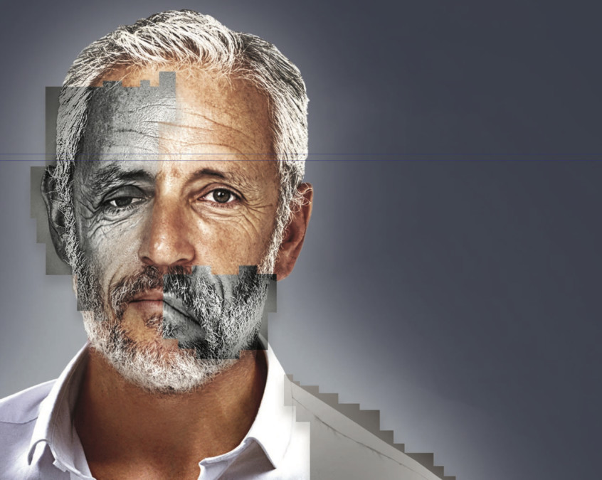
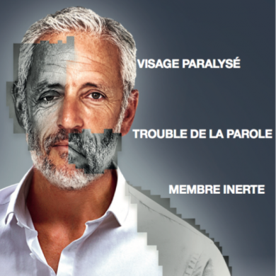
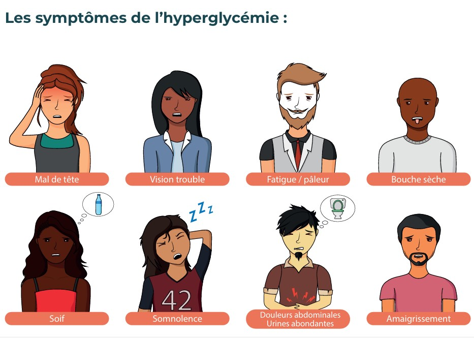
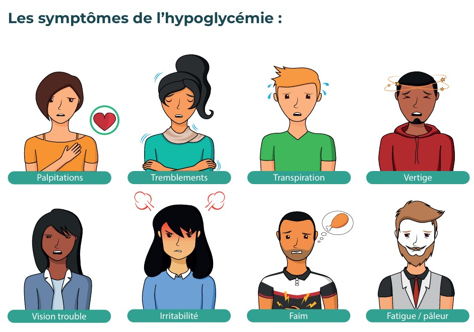

L'apparition d'un seul de ces signes impose une alerte immédiate au 15. Chaque minute compte : pour l'AVC, le cerveau perd des millions de neurones par minute sans traitement.
En période épidémique : appliquer les mesures barrières, proposer un masque à la victime (le retirer si cela gêne sa respiration). Respecter la distance physique autant que possible.
Position par défaut · Lit, canapé ou sol · Prévient les détresses circulatoires · Permet de récupérer
Si difficultés à respirer · Facilite la ventilation · Laisser la victime choisir son appui
Si aucune contre-indication · Respecter le choix de la victime · Ne pas forcer une position
Se placer en position accroupie · Baisser la tête entre les deux genoux · Peut précéder la mise en position allongée
Croiser les jambes · Contracter les muscles en essayant de tendre les jambes · Serrer les fesses · Contracter l'abdomen
Agripper les deux mains par les doigts en crochet · Écarter les coudes · Tirer comme pour séparer les mains · Contracter les bras
Dans un bus, un avion, un couloir étroit : les manœuvres peuvent précéder la mise en position allongée. Dès que possible, allonger la victime.


Points clés : l'alerte a-t-elle été immédiate (sans attendre) ? Les signes d'AVC ont-ils été reconnus ? La victime a-t-elle été installée ? A-t-on évité de lui donner à manger/boire ?
Moyen mnémotechnique AVC : VITE — Visage déformé · bras qui tombe · Trouble de la parole → Estafette (appeler le 15)


Points clés : le sucre a-t-il été donné seulement parce qu'elle est consciente et peut avaler ? L'avis médical a-t-il été demandé ? A-t-on évité de donner à boire si elle était semi-consciente ?
Règle d'or : on aide à la prise de traitement (sucre, médicament) uniquement si la victime est consciente, peut avaler, et le demande ou si les secours le prescrivent.